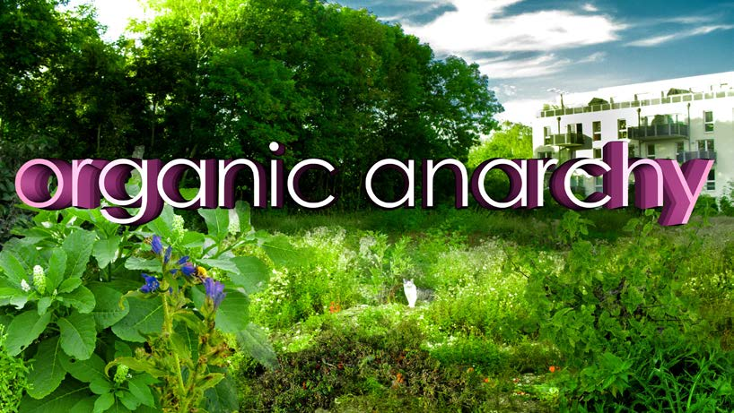
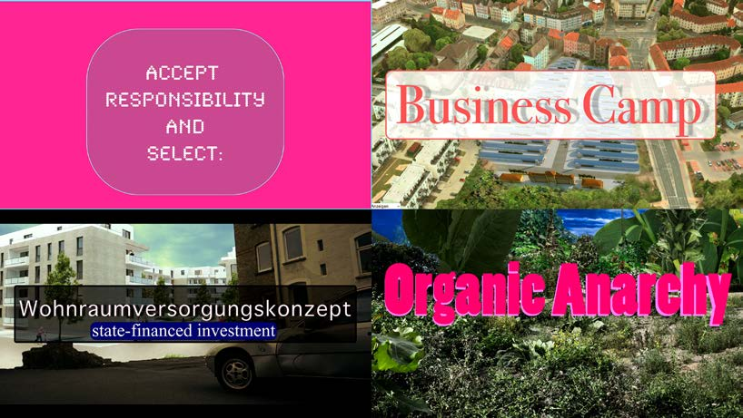
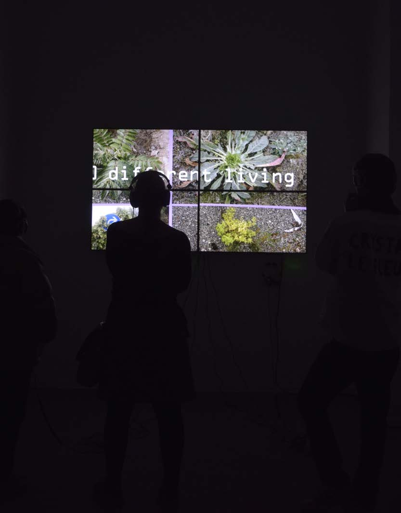
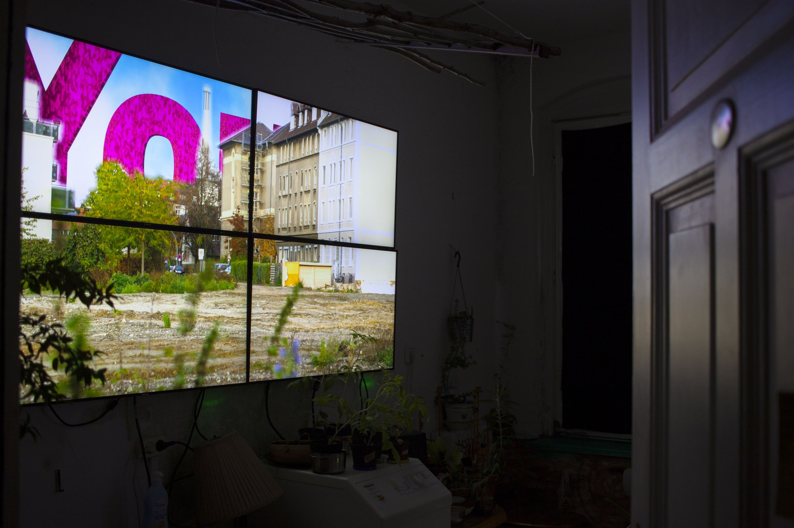

Create Your Surrounding!
2017 · Multi-channel video installation
Create Your Surrounding! is a multi-channel video installation by Nickii Schamborski, 2017.




About the work
Over a two-year period, I documented and observed this construction site, developing a work that explores determination and external control in urban space. Through flashy aesthetics, aggressive soundscapes, and digital collaging of advertisement imagery, the multi-channel video installation addresses transformation in public space. Possibilities of influence and powerlessness are questioned based on the observation of a reconstruction area.
Zur Arbeit
Über einen Zeitraum von zwei Jahren habe ich dieses Baustellengebiet besucht und dokumentiert, woraus sich eine Arbeit entwickelte, die sich mit der Determinierung und Fremdbestimmung im Stadtraum auseinandersetzt. Durch plakative Ästhetik, aggressive Klanglandschaften und digitale Collagen von Werbeinhalten adressiert die mehrkanalige Videoinstallation die eigene Ohnmacht angesichts Veränderungen des öffentlichen Raum. Die Einflussmöglichkeiten jedes*r Einzelnen werden anhand der Beobachtung eines Umbaugebietes hinterfragt.
Details
- Year
- 2017
- Type
- Multi-channel video installation
- Specs
- Single-channel video (4K, stereo sound, 12:27 min, English titles). Displayed on four LCD-Monitor